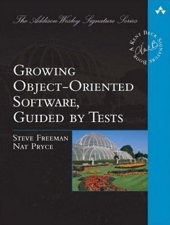

Clean Code
en practique
Antoine Vernois
Agile Software Craftsman / Journeyman
blog : https://blog.crafting-labs.fr
twitter : @avernois
#ISpeakForFood
Remerciements
Jérôme Avoustin

Disclaimer
- pour les langages orientés objets
- je ne rentrerai pas dans les détails
- certains points paraîtront stupidement simple
- je vais me répéter
Agilité et Qualité
Une attention continue à l'excellence technique et au bon design améliore l'agilité.
Manifeste Agile, 9è principe
Pourquoi la qualité ?
Agilité et Qualité (le retour)
Répondre au changement plutôt que la poursuite d'un planManifeste agile, 4è valeur
C'est quoi la qualité ?
Un logiciel est de bonne qualité si le coût d'ajout d'une fonctionnalité est constant dans le temps.Jérôme Avoustin
C'est quoi un code propre ?
Clean code is not about beautifullness,
it's about goodness.Rebecca Wirfs-Brock
- testé !
- sans duplication
- révèle son intention
- facile à lire
B. Stroustrup, R. Jeffries, K. Beck, M. Feathers, W. Cunningham, ...
À propos des tests
Quand on me dit que les tests c'est pour ceux qui ne savent pas coder.

Smells

Smells
- Singleton
- Tight coupling
- Untestable
- Premature Optimisation
- Indescriptive naming
- Duplication
Good practices

Good practices
- Single Responsability
- Open-closed principle
- Liskov substitution principle
- Interface segregation principle
- Dependency inversion principle
Une bon nommage
- le nommage doit révéler l'intention
- alt+shift+r est votre ami (eclipse)
Let's see for real.
Duplication
DRY : Don't repeat yourself !
Abstraction
1 niveau par méthod
Abstraction
Demeter's Law
Don't talk to stranger
a.getB().getC().doThings();
Couplage fort
C'est mal !
- Tests
- Souplesse
- Réutilisation
- ...
Injection de dépendance
public class A {
private B b;
public void execute(int i) {
b = new B();
C c = new C();
if (i <= 3) {
b.executeB();
} else {
c.executeC();
}
}
}
Méthodes
Courtes
Commentaires
Comments are always failureUncle Bob
Don't comment bad code. Rewrite it.Brian W. Kernighan, P.J. Plaugher
Commentaires dans la vraie vie
/*
* A comment to please checkstyle
*/
/*
* Set the port
*
* @params port
*/
public void setPort(Port port) {this.port=port}
...
} /* end for */
dao.flush();
default :
break;
} /* end switch */
} /* end if */
} /* end if */
} catch ...
Commentaires : l'exception
expliquer le pourquoi !
Commentaires
Les tests me disent Quoi
Le code me dit Comment
Les commentaires me disent Pourquoi
Gestion des exceptions
Fail Fast
- Do not check exception
- Manage exception as high as possible
- Never ever return null !
Tests
Ils vous donnent confiance pour modifier le code.
- un test, un assert
- lisible
- ils documentent votre code
Un test doit vous raconter une histoire.
Les tests sont des citoyens de première classe.
Quelques conseils de plus
Ne pensez pas héritage, pensez polymorphisme
Ne pensez pas if/switch, pensez polymorphisme
évitez les singletons
Je vous avez prévénu que je me répeterai ;)Read list



Quotes
Any fool can write code that a computer can understand. Good programmers write code that human can understand.Martin Fowler
Always code as if the guy who ends up maintaining your code will be a violent psychopath who knows where you live.Martin Golding
...if you're afraid to change something it is clearly poorly designed.Martin Fowler